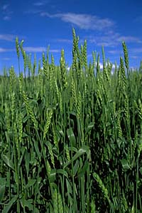

Wheat is one of the world's most important grains, with annual production in the 1990s
at a record 600 million tonnes. Wheat contributes between 10 and 20% of
the daily caloric intake of people in over 60 countries.
Saskatchewan grows more wheat than all other Canadian provinces combined.
In 1998, an estimated 12.4 million tonnes was harvested, down 12% from the
10 year average.
Most Saskatchewan wheat is exported. The boom or bust situation of many prairie farmers is related to the price of wheat of the world markets.
Export subsidies by the governements EEC and the U.S. have often been blamed for driving down prices.
Although farmers have turned to alternative crops in recent years, particularly oilseed production,
over 44% of net farm cash receipts still comes from wheat production.
|
According to plant breeders using the scientific classification system
(binomial nomenclature), wheat belongs to the:
- grass family Gramineae (Poaceae)
- tribe Hordeae
- genus Triticum
- species aestivum
- variety cultivar
|
|

Most wheat currently grown consists of three species of triticum, each with a different country of origin. Probable countries of origin of Triticum wheat include Southeastern Turkey, Near East, Soviet Georgia,Trans-Caucasia and Caspian Sea. Wheat grows approximately 1 m high having grain on a rachis. Kernels of wheat range from 5 to 8 mm in length and 2.5 to 4.5 mm in width. Average kernel weights are around 37 mg, but may range anywhere from 20 to 60 mg.
|
Why is wheat produced?Growing, transporting and processing wheat is essential to the Canadian economy at local, provincial and
federal levels. Wheat has many advantages which have resulted in it becoming one of the most important cereal crops in the world.
|
|

Wheat is easy to grow, flourishing in many different soils and climates. The grain is easy to handle, store and transport.
|
Most importantly, wheat and rye are the only two cereals which are able to produce leavened bread due to a substance called gluten. Gluten is a grayish-white, flour-like substance which is concentrated in the outer part of the seed (bran). When combined with water, gluten produces a gluey substance which gives dough it's elasticity, enabling it to capture air bubbles and "rise", which is important in making light loaves of leavened bread.
|
|
In terms of energy efficiency, wheat is quite good. In the form of bread, wheat contains more energy than is used to grow, harvest, mill, bake and transport it to marketplaces.
|
Where is it produced?
Around the world, 2.5 million square kilometres are used for growing wheat.
The most important area is the mid-section of Canada and the United States.
It is in this area that wheat is grown using the most efficient methods; in
huge fields, being harvested by great combines.
In order to produce good quality, high protein seeds, wheat needs a cool,
moderately moist early growing season, with abundant sunshine and gradual drying and
warmth for the remaining growth period. Saskatchewan conditions meet these requirements,
resulting in wheat production throughout the agricultural sections of the province.
|
The number of fields sown to wheat become fewer as one moves north in the province
due to the decreased number of frost-free days (the number of days required for wheat
to reach maturity).
|
Wheat has been the number one crop from the earliest days in Saskatchewan.
On almost 7 million hectares, Saskatchewan farmers produce enough wheat each year to
feed 76 million people (almost 16 million tonnes of wheat) according to agricultural statistics.
|
Total farm cash receipts exceed 3 billion dollars in
Saskatchewan. Wheat alone made up nearly 45% of this amount and
approximately ninety percent of the money made from wheat comes from
export sales.
|
Wheat is primarily used for human consumption. Wheat is ground into flour which is then made into products such as bread, cakes, cereal, macaroni, and noodles. Other uses include the manufacture of alcohol, uses of extracted gluten, and livestock feed.
|
The varieties Hard Red Winter and Hard Red Spring classes are used primarily for leavened bread production. Soft Red Winter and Common White wheat classes are used for pastries, crackers, and cookies. Durum wheat, a species with an extremely hard grain, is used for macaroni, spaghetti, and other pasta products. It is often used for arabic flat bread in North Africa and the Near East. Hard wheats contain greater protein levels, whereas the soft wheats have lower levels.
|
|

Saskatchewan's Canada Western Red Spring Wheat is internationally renowned for the baking quality of its flour. Wheat flour products like bread and pasta are a staple source of nutrients for people all over the world.
|
Whole wheat flour is made from the whole kernel, including the nutrient-rich bran and wheat germ.
White flour is made from the endosperm, which is primarily starch. The bran and wheat germ are the main source of most of the nutrients in whole wheat flour. Bread is often called "the staff of life", because it is an essential part of the human diet. Whole wheat bread is a particularly nutritious food, and excellent source of carbohydrate, protein, B vitamins, mineral and fibre. Whole wheat bread contains less saturated and unsaturated fat than enriched white bread, and is a wise choice for health-conscious consumers.
|
How is it produced?
Through plant breeding, scientists develop new varieties which are higher yielding and have more disease resistance. Farmers who specialize in seed production multiply seed of these varieties for commercial farmers to plant.
|
|

Farmers prepare the fields for planting. Most farmers plant in the spring and harvest in August and September. Some farmers (about 0.6 %) plant winter wheat in September or October. Winter wheat is harvested in late July and early August. Before planting a crop, farmers prepare their fields for seeding. This entails cultivating the soil, usually applying fertilizers and then seeding the crop using a seed drill. If required, herbicides for weed control are used.
|
When the crop ripens, it is harvested. Wheat is ready to be harvested when it is about 1 metre high and the colour changes from green to golden. A head of wheat contains 30-65 kernels of grain. The crop is cut and allowed to dry on the field. A combine is used to separate the seeds from the chaff and straw. Harvested grain is stored in granaries. It is important to maintain specific moisture levels in grain to ensure that it does not become mouldy.
|
How does the wheat get from the farm to international markets?
- Grain is delivered by truck from the farm to the local elevator where it is weighed, unloaded and sampled to
determine the grade of the grain. This grade determines the price the farmer is paid for the grain.
- An elevator agent grades the grain according to
Canadian Grain Commission standards for quality, appearance, plumpness and density. Once the grain is graded, the agent mechanically transfers it to a bin in the elevator holding the same grade of grain.
- Grain for domestic use is shipped via rail from the
local elevator to the mill for processing. Wheat for export is transported, also via rail, to one of several large terminal elevators at Canadian ports where it is cleaned to export standards.
- Grain destined for export is loaded at the terminal elevators onto bulk grain freighters and shipped all over the world.
|
|
The costs of moving wheat from the farm to the grain elevator include purchasing and maintaining grain trucks, as well as the
ever-increasing price of fuel. Farmers transport wheat in the fall, after harvest, and at other times during the year when price and market may be more favourable.
|

Canada exports wheat to over 60 different countries. China, the countries of the former U.S.S.R., and Asia are large importers of
Canadian wheat.
|
The Canadian Wheat Board is the sole marketing agent for wheat grown in Canada.
Selling wheat to foreign countries can be complicated by political change and upheaval,
as well as by competition from other exporters of wheat, like the United States and the European Economic Community.
|
The Wheat Board may sell wheat directly to a customer,
or it may sell through accredited exporters, making use of the expertise of
private traders with offices and contacts throughout the world.
Sales and market development are the major focus of the Wheat Board.
The Board backs up its sales initiatives with up-to-date analyses of trends
in the world wheat trade.
|

How Flour Is Made
When wheat arrives at a flour mill for processing, it is
inspected and graded.
|
|
|